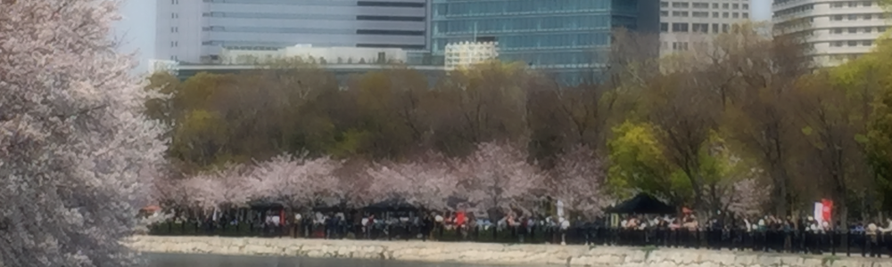

sample-website
title:trattoria
架空のイタリアンレストランを題材に、トップページのみ作成しました
skill
- Adobe-Dreamweaver CC
- Adobe-Photoshop CC
- Adobe-Illustrator CC
- Adobe-Fireworks CS6
- HTML5
- CSS3
- PHP
- Javascript
- Emmet
- Sass
- Gulp
- Microsoft Office Excel 2010
- Microsoft Office Word 2010
- Microsoft Office PowerPont 2010
- CLIP STUDIO PAINT PRO
profile
1981年 兵庫県伊丹市に生まれ、漫画やアニメを愛して育つ。
中学・高校時代は中高一貫校で 6年間を通して漫画研究部に所属し、作品作りについて学ぶ。
熱意が認められ、中学卒業時には文化部代表として文化部功労賞の賞状を授与される。
漫画の勉強を続けるために短期大学は美術科を選択し、ビジュアルデザインコースにてAdobe Photoshop・Illustratorの基礎を学び、卒業制作はIllustratorを使用して巨大すごろく（B1サイズ4枚分）を作成した。
2002年 短期大学卒業後は粉末食品充填工場にて機材オペレータとして絵や CGにまったく関連のない職場で働くも、2005年ごろよりPhotoshop・Illustratorの知識を買われ社ロゴ・キャラクターを作成。
2007年 パソコン教室の電話受付をする傍ら、HTMLの基礎を学ぶ教材作成に従事すると同時に勉強。
eラーニングサイト構築のためにDreamweaver操作とCSSを学び゙、社のWebサイトを一人で作成した。
2011年ごろより上司から個人的にPHP・MySQL・データベース操作・ WordPressについて学び、テーマ・プラグインを自作して Wordpress管理画面からデータベースを操作しWebサイトに反映するシステムを構築。
2013年ごろから社内でアイコンイラストを自作するようになり、パソコン教室のチラシに自作のスタッフ似顔絵を掲載。
一部自社出版テキストにて 挿絵を担当。
同時にパソコン教室のチラシ作成を通して印刷物について学ぶ。
2014年 個人的にLINEスタンプ作成を開始。
第1弾「ぺんぎんの日々」は最高416位にランクインした。
2016年より派遣社員として社内サイトのデザインと作成に携わり、HTML5・CSS3・JS・Emmet・Sass・Git・Gulpと新たな技術を学んでいる。